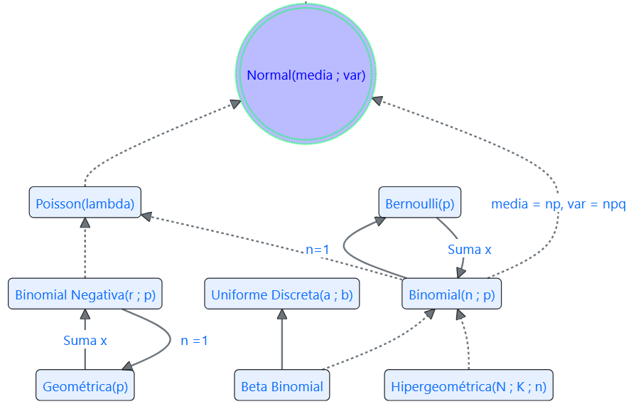

Capítulo 1 Modelos para v.a. Discretas
1.1 Bernoulli
El ensayo Bernoulli constituye el bloque fundamental para la definición de los modelos de probabilidad más importantes que se expondrán aquí.
Partiremos de la definición del ensayo Bernoulli para seguir con la definición de la v.a. Bernoulli y luego la definición del modelo Bernoulli.
1.2 Ensayo Bernoulli
Un experimento Bernoulli ocurre cuando se realizan determinaciones sobre una variable que solo se puede presentar de dos formas. Por esto, el espacio muestral asociado a tal experimento solo tiene dos eventos que se denominan, respectivamente, Éxito y Fracaso.
\[\Omega_{Bernoulli} =\{Éxito, \; Fracaso\}\]
De forma general, las probabilidades asociadas a los dos eventos del espacio muestral se definen como: \(P(Éxito)=p\) y \(P(Fracaso)=1-p=q\)
1.3 Función de probabilidad Bernoulli
Si se realiza un ensayo Bernoulli y se define la variable aleatoria, X:
Sea \(X\) la v.a. que cuenta el número de Éxitos cuando se realiza un ensayo Bernoulli, entonces podemos describir la probabilidad de la v.a. como:
| X | 0 | 1 |
|---|---|---|
| P(X=x) | \(q=1-p\) | \(p\) |
| :-: | :-: | :-: |
También:
\[P(X=x)=p^xq^{1-x} \;\;\; \text{para} \;x=\{0, 1\}\] Observe que:
\[E(x)=p\] \[Var(x)=p(1-p)=p\times q\]

library(dplyr)
#> Warning: package 'dplyr' was built under R version 4.4.3
#>
#> Adjuntando el paquete: 'dplyr'
#> The following objects are masked from 'package:stats':
#>
#> filter, lag
#> The following objects are masked from 'package:base':
#>
#> intersect, setdiff, setequal, union
library(tidyr)
#> Warning: package 'tidyr' was built under R version 4.4.3
# Probabilidades de éxito (p)
prob_exito <- c(0.05, 0.10, 0.20, 0.30, 0.40,
0.50, 0.60, 0.70, 0.80, 0.90)
# Número de ensayos (n)
num_ensayos <- c(2, 3, 4, 9, 12)
# 1. Generar todas las combinaciones válidas (n, k, p)
grid <- expand.grid(Ensayos = num_ensayos, p = prob_exito) %>%
rowwise() %>%
mutate(Exitos = list(0:Ensayos)) %>%
unnest(Exitos) %>%
ungroup()
# 2. Cálculo vectorizado de la CDF binomial
grid <- grid %>%
mutate(prob_acum = pbinom(Exitos, size = Ensayos, prob = p))
# 3. Formato ancho (una columna por probabilidad)
tabla_final <- grid %>%
pivot_wider(names_from = p, values_from = prob_acum,
names_prefix = "p=", names_glue = "p={formatC(p, format='f', digits=2)}") %>%
arrange(Ensayos, Exitos)